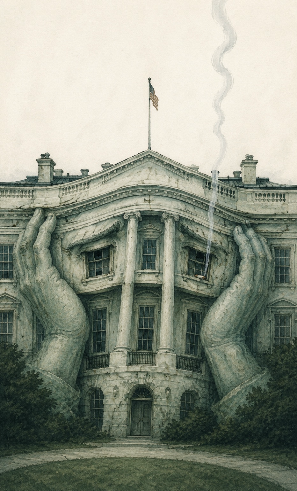
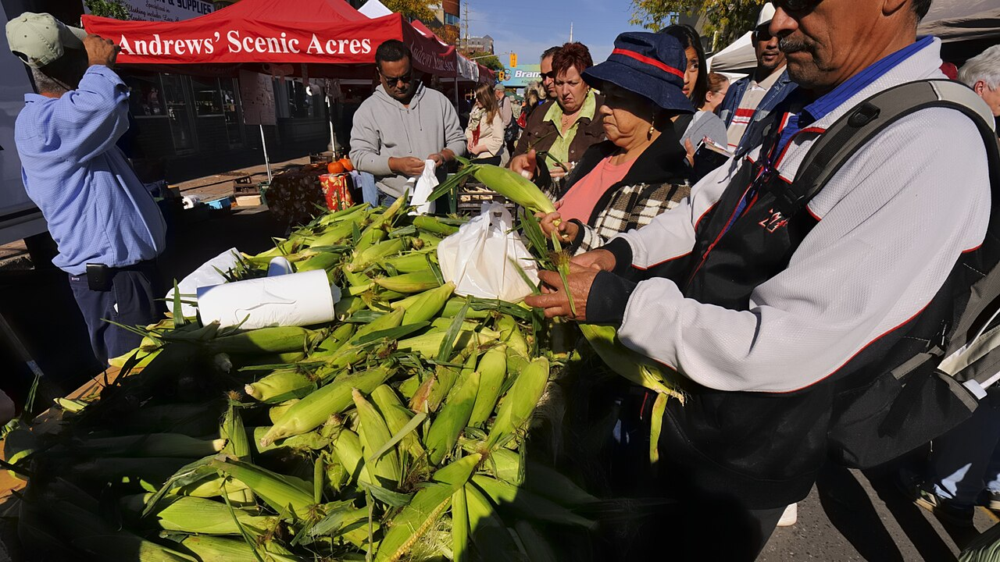
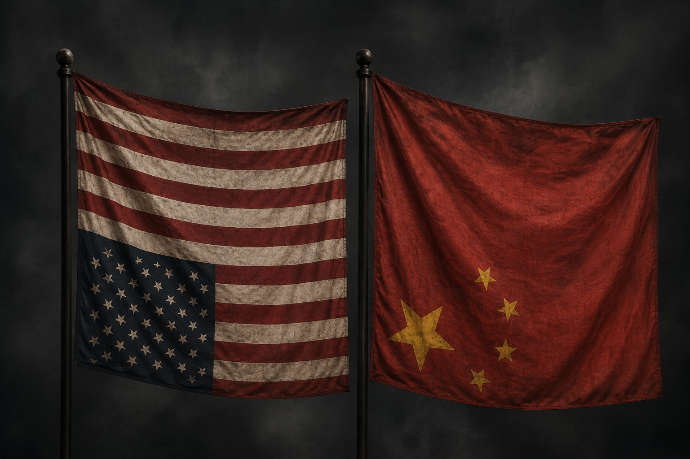
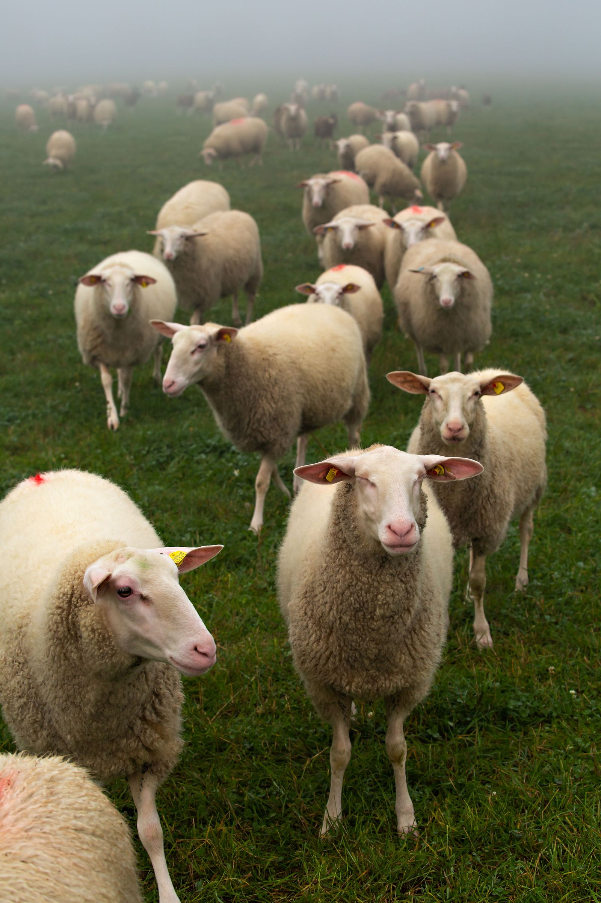
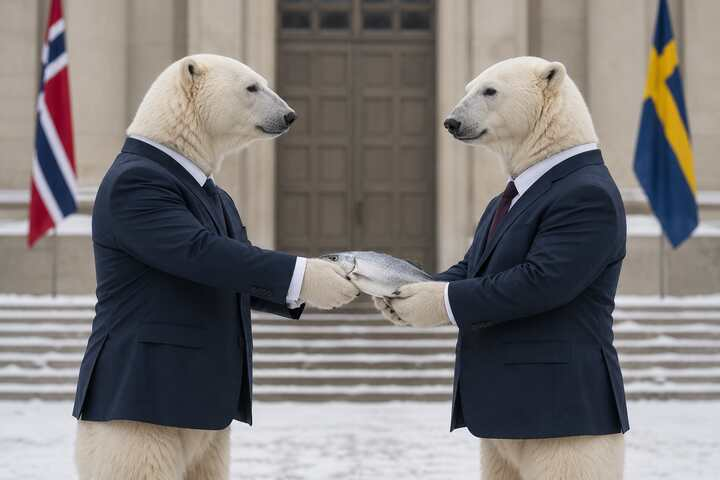

Analysis · Canada–U.S. trade · United States economy
TRUMP SAYS AMERICA COULD STOP TRADING WITH CANADA. HERE’S WHAT AMERICA WOULD LOSE.
No major study models the literal zero-trade threat Trump described Friday. Research on much smaller disruptions already shows the United States would damage its own factories, energy system, farms, exporters and household incomes.
Read the analysis →
MAGAHEADS · September 5 · Daily briefing
MAGAHEADS: TRUMP MOVES FROM TARIFFS TO TALK OF ENDING TRADE WITH CANADA
Trump escalated to explicit talk of ending trade with Canada, Greer carried the administration’s case into Saturday, and Glenn Beck turned the dispute into a mock “Know Your Canadian” threat-preparedness routine.
Read MAGAHEADS →
Analysis · Canada–U.S. relations · Public messaging
WASHINGTON CAN’T STOP TALKING ABOUT CANADA. OTTAWA HAS STOPPED ANSWERING EVERY VOLLEY.
Trump and his economic officials have kept Canada in an almost daily public argument. Ottawa is still acting, but it has not matched Washington’s public cadence since Carney answered Thursday.
Read the analysis →United States · Justice Department · Canada–U.S. relations
DOJ CALLS ‘PAUSE ON CANADA’ A MISUNDERSTANDING — AS WASHINGTON LURCHES THROUGH A DAY OF ERRATIC POLICY
A written antitrust instruction told staff to stop cooperation with Canada. The department says it only meant to delay a meeting.
Read the report →
Trade diversification · Statistics Canada · Exports
CANADA’S NON-U.S. EXPORTS HIT RECORD $25.6 BILLION AS U.S. SHARE FALLS TO 66.3%
Canada exported a record $25.6 billion in goods to countries outside the United States in July, pushing non-U.S. markets to 33.7% of merchandise exports. In 2024, the United States accounted for 75.9% of Canadian domestic exports.
Read the report →Canada · Employment · Tariffs · Economy
CANADA LOSES 42,000 JOBS — BEFORE THE NEWEST U.S. TARIFFS ENTERED THE DATA
Full-time employment accounted for most of the decline and unemployment held at 6.4%. The survey reference week ran Aug. 9–15, before Washington’s latest 50% tariffs took effect Aug. 22.
Read the report →Published Sept. 4, 2026 · 11:50 a.m. ET
Fact check · Banking · Canada–U.S. trade
TRUMP SAYS U.S. BANKS ARE BARRED FROM CANADA. FIFTEEN ARE ALREADY HERE.
Trump said Canada does not allow American banks to operate there. AP found 15 U.S.-based banks already doing business in Canada, and Canada’s banking regulator publishes a formal route for foreign branches.
Read the fact check →Published Sept. 4, 2026 · 11:50 a.m. ET
Food supply · Buy Canadian · Trade diversification
WHY ARE ONTARIO GROCERS STILL STOCKING SO MUCH AMERICAN PRODUCE?
Ontario farms are in peak harvest while non-U.S. suppliers can provide much of what Canada cannot grow. Yet U.S.-grown produce remains common in the bins.
Read the report →Published Sep. 4, 2026 · 1:14 a.m. ET

Buy Canadian · VIA Rail · Manufacturing
OTTAWA COMMITS $4.7 BILLION TO BUILD 313 VIA RAIL CARS IN CANADA
The passenger cars will be produced and assembled in Thunder Bay and Quebec, returning VIA passenger-car production to Canada after four decades as Ottawa expands its Buy Canadian procurement policy.
Read the report →Published Sept. 3, 2026 · 5:32 p.m. ET
Tariffs · Small business · Survey
CFIB REPORTS FINANCIAL PRESSURE AFTER TARIFF ESCALATION
Among businesses affected by the trade war, CFIB says 18% of small exporters and 11% of importers surveyed would no longer be financially viable if it lasted at least three months. The figures are reported expectations, not observed closures.
Read the report →Published Sept. 3, 2026 · 1:00 p.m. ET
Canada–EU · Defence · Digital trade · Critical minerals
CANADA AND EUROPE ARE BUNDLING DEFENCE, DIGITAL TRADE AND CRITICAL MINERALS
The latest Anand–Kallas readout shows something larger than another diplomatic meeting: Ottawa and Brussels are assembling security, industry, technology and trade into a single strategic relationship.
Read the report →Published Sept. 2, 2026 · 9:23 p.m. ET

Tariffs · Manufacturing · Industrial policy · Winnipeg
OTTAWA PUTS $15.9 MILLION INTO WINNIPEG MANUFACTURING AFTER U.S. TARIFF ESCALATION
Ottawa is directing $15.9 million to 15 Winnipeg manufacturing projects, including money to bring fire-truck components into Canadian production, automate factories and pursue new markets.
Read the report →Published Sept. 3, 2026 · 2:32 p.m. ET
Critical minerals · Saskatchewan · Industrial policy · National security
A SASKATCHEWAN COPPER-ZINC MINE IS NOW PART OF CANADA’S NATIONAL-SECURITY STRATEGY
McIlvenna Bay is ramping toward commercial production after major federal backing and an Eldorado acquisition. Ottawa explicitly links its copper and zinc to national security, advanced manufacturing and supply-chain resilience.
Read the report →Published Sept. 2, 2026 · 9:23 p.m. ET

Technology sovereignty · China · United States · Energy security
THE CHINA RISK IS REAL. SO IS THE AMERICAN ONE.
An Enverus warning about Chinese technical-support dependencies points to a larger Canadian sovereignty problem: Washington also has legal power over technology Canada may depend on.
Read the analysis →Published Sept. 2, 2026 · 5:44 p.m. ET

Artificial intelligence · Copyright · Digital sovereignty
WASHINGTON BACKS OPENAI. CANADIAN CREATORS ARE GOING TO COURT.
The U.S. is pressing a permissive approach to AI training as SOCAN sues Suno in Canada and Mark Carney says “laissez-faire” is not the answer to AI-era safety.
Read the report →Published Sept. 2, 2026 · 3:28 p.m. ET
Tariff response · Industrial policy · Nova Scotia
THE TARIFF WAR IS STARTING TO CHANGE WHAT CANADIAN COMPANIES BUY
One Nova Scotia manufacturer says it removed U.S. suppliers from consideration; other federal grants are aimed at Europe, defence work and a U.K. trade mission.
Read the report →Published Sept. 2, 2026 · 3:28 p.m. ET
MAGAHEADS · Canada–U.S. trade · U.S. Treasury
MAGAHEADS: BESSENT CALLS CANADA A ‘LITTLE YIPPY DOG’ AS COUNTER-TARIFFS NEAR
On Fox News, the U.S. Treasury secretary compared Canada to a barking dachshund and said Ottawa’s counter-tariffs would have little effect on American prices.
Read the report →Published Sept. 6, 2026 · 4:34 p.m. ET
Canada–U.S. relations · Public opinion · Trade
41% OF CANADIANS NOW CALL THE UNITED STATES AN ENEMY, LÉGER FINDS
A Léger survey finds a sharp rise in the share of Canadians calling the United States an enemy—and support for counter-tariffs even among people expecting higher prices.
Read the survey →Published Sept. 6, 2026 · 4:35 p.m. ET

MAGAHEADS · Canada–U.S. trade · U.S. Treasury
MAGAHEADS: BESSENT CALLS CANADA A ‘LITTLE YIPPY DOG’ AS COUNTER-TARIFFS NEAR
On Fox News, the U.S. Treasury secretary compared Canada to a barking dachshund and said Ottawa’s counter-tariffs would have little effect on American prices.
Read the report →Published Sept. 6, 2026 · 4:34 p.m. ET

Canada–U.S. relations · Tourism · Consumer response
U.S. TOURISM WANTS CANADIANS BACK. THE TRADE FIGHT IS MAKING THAT HARDER.
U.S. destinations are offering discounts and new outreach to Canadians. But after a year of lost trips, a trade fight and political insults are making a quick return unlikely.
Read the report →Published Sept. 6, 2026 · 10:39 a.m. ET
Canada–U.S. trade · Agriculture · Manufacturing · Diversification
CANADIAN WOOL TAKES THE LONG WAY AROUND AMERICA
A 50-per-cent U.S. tariff has made an old cross-border wool-processing route much harder to justify. Canadian producers are sending raw fibre to China and the Czech Republic instead — while the industry asks why more of the work cannot be done at home.
Read the report →Published Sept. 5, 2026 · 11:42 p.m. ET

United States · Republicans · Canada–U.S. trade
REPUBLICANS PRESSED GREER ON CANADA. IN PUBLIC, THEY BLAMED CANADA.
A closed-door Republican meeting exposed pressure inside Donald Trump’s party over the trade war. The public message afterward was much more disciplined: Ottawa, not Washington, is responsible for the impasse.
Read the report →Published Sept. 2, 2026 · 9:23 p.m. ET
Trade remedies · China · Truck and bus tires
CANADA OPENS A TRADE INQUIRY INTO CHINESE TRUCK AND BUS TIRES
The Canadian International Trade Tribunal has begun a preliminary injury inquiry after a complaint alleged that imports from China were dumped and subsidized. It is the start of a trade-remedy case, not a tariff decision.
Read the report →Published Sept. 2, 2026 · 6:23 p.m. ET
Humour · Media Watch · Germany
GERMANY HAS A NAME FOR AMERICA’S NEW PLACE ON THE MAP. IT IS NOT DIPLOMATIC.
Der Postillon turned North America’s map-renaming politics into a German punchline — and the map itself does most of the work.
Read the satire report →Published Sept. 1, 2026 · 4:52 p.m. ET

Mexico · Canada–U.S. trade · CUSMA · Analysis
MEXICO WATCHES CANADA’S TRADE WAR AND SEES ITS OWN WARNING
Mexican economists, writers and ministers are reading Ottawa’s rupture with Washington as a warning: formal trade rules are no longer the same thing as certainty.
Read the analysis →Published Sept. 2, 2026 · 12:28 a.m. ET
G20 · Trade diversification · Middle powers
A SMILING CARNEY IN A HARSHER WORLD: CANADA’S MIDDLE-POWER TEST BEGINS
Canada’s answer to U.S. coercion is taking shape: build practical ties with countries that still value trust, rules and reliable supply chains.
Read the analysis →Published Sept. 2, 2026 · 12:28 a.m. ET
Nordics · Economic security · Supply chains
THE NORDICS HAVE PUT ESSENTIAL SUPPLIES IN THEIR SECURITY PLAN
A new Nordic declaration aims to keep critical goods and services moving in crises and war. Canada is not a signatory, but its March agreement with Nordic leaders makes the new framework worth watching.
Read the report →Published Sept. 2, 2026 · 11:43 a.m. ET

United States · Senate elections · Canada–U.S. trade
THE CANADA TARIFF HAS BECOME A SENATE-RACE PROBLEM
A new five-state Abacus Data poll finds that supporting tariffs on Canada is a stated electoral liability for U.S. Senate candidates in every state tested.
Read the poll analysis →Published Sept. 2, 2026 · 11:43 a.m. ET
Canada–U.S. trade · Prime Minister · Sovereignty
“WHEN THE AMERICANS STOP DOING MEMES, STOP THROWING SHADE, STOP TRYING TO BE TOUGH AND START BEING SERIOUS ABOUT HAVING THOSE DISCUSSIONS, WE CAN HAVE THOSE DISCUSSIONS”
Mark Carney leaves the negotiating door open — but says Washington has to stop performing and start negotiating.
Read the report →Published Sept. 1, 2026 · 4:52 p.m. ET

Europe · Foreign policy · Gymnich · Developing
CANADA IS IN EUROPE’S FOREIGN-POLICY ROOM. THE MEETING IS UNDER WAY.
Anita Anand’s historic Gymnich participation is happening now. The Sept. 1–2 meeting continues Wednesday, so this replaces the stale preview without inventing a final outcome.
Read the updated meeting report →Published Sept. 1, 2026 · 4:52 p.m. ET
Media Watch · National Post · Canada–U.S. trade
WASHINGTON MOCKED CANADA. THE NATIONAL POST MADE THE HUMILIATION THE HEADLINE.
Scott Bessent’s insult was news. The editorial choice was how to package it. Canada at War examines why that choice matters when U.S. officials are openly portraying Canada as weak, small and unable to resist.
Read the Media Watch analysis →Published Sept. 1, 2026 · 3:04 p.m. ET

Analysis · Media ownership · Postmedia
POSTMEDIA’S FINANCIAL PUZZLE: MONEY, OWNERSHIP AND MEDIA POWER
The public record shows years of losses, debt restructuring and a major U.S. hedge-fund role in one of Canada’s most influential newspaper systems. It does not show that an owner ordered a particular headline. Both facts matter.
Read the rewritten investigation →Published Sept. 1, 2026 · 3:04 p.m. ET
United States · Canada–U.S. trade · Reuters/Ipsos poll
AMERICANS TELL TRUMP: COMPROMISE WITH CANADA
The striking number in a new U.S. poll is not simply that Americans dislike the tariffs. It is that they reject the negotiating theory behind them: 68% want trade-offs with Canada, while 25% want Washington to take the hard line.
Read the poll analysis →Published Sept. 1, 2026 · 11:21 a.m. ET
Defence · NATO · Halifax · Canadian industry
NATO’S HALIFAX LAB PUTS CANADIAN DEFENCE TECH NEAR THE FRONT OF THE QUEUE
NATO’s GLOW integration event at COVE in Dartmouth puts Alliance testing beside a Canadian ecosystem building AI-enabled sensing, autonomous marine systems, ocean technology, space systems and maritime intelligence.
Read the Canadian defence-tech report →Published Sept. 1, 2026 · 11:21 a.m. ET
United States · Media · Press access
REPUBLICANS SHUT CBC OUT OF MIDTERM CONVENTION
RNC revokes accreditation for CBC/Radio-Canada as tensions with Canada spread from trade and diplomacy into the media.
Read the 500-word report →Published Sept. 1, 2026 · 12:49 a.m. ET
Digital sovereignty · Practical guide · Canada
HOW TO GET OFF AMERICAN TECH — AND WHAT TO USE INSTEAD
Paris Marx’s guide to non-U.S. technology is surging after the Lake America map fight. Our practical Canadian guide checks the strongest alternatives for email, search, maps, browsers, office software, phones, cloud services, streaming and more.
Read the 2,000-word guide →Published Sept. 1, 2026 · 4:25 a.m. ET
China · Electric vehicles · Trade diversification
THE SECOND GATE OPENS FOR CHINESE EVS
Canada’s second import period starts today with 24,500 fresh slots plus unused first-period capacity. We look at the BYD Dolphin, Chery Omoda E5 and Zeekr 001 — including estimated price and range — and separate confirmed Canadian plans from speculation.
Read the report →Published Sept. 1, 2026 · 4:25 a.m. ET
Sovereignty Watch · United States · United Kingdom
THE FALKLANDS TEST: WHEN AN ALLY’S SOVEREIGNTY BECOMES LEVERAGE
Donald Trump says Washington is reviewing its position on the Falkland Islands. For Canada, the issue is not whether the South Atlantic dispute is identical to our own confrontation with Washington. It is what happens when an ally’s territorial position can enter the bargaining inventory of American power.
Read the 2,000-word analysis →Published Aug. 31, 2026 · 8:54 p.m. ET
Canada–U.S. trade · G20 Asheville
Champagne takes Canada’s diversification case to the G20.
Canada’s finance minister arrived in Asheville emphasizing collaboration, a level playing field, critical minerals, energy and potash — and preparing for the first senior Canada–U.S. face-to-face contact since the trade talks collapsed.
Read the 500-word report →Published Aug. 31, 2026 · 5:56 p.m. ET
Alberta · Canada–U.S. trade · Public diplomacy
Danielle Smith takes her case to American television.
Alberta’s premier is urging a return to tariff-free trade and negotiations—while holding fast to her view that oil and gas should not become Canada’s bargaining weapon.
Read the 500-word report →Published Aug. 31, 2026 · 7:02 p.m. ET
Canada–U.S. trade · G20 · Developing
Bessent escalates — then sits down with Canada
Hours before an expected face-to-face meeting with François-Philippe Champagne, U.S. Treasury Secretary Scott Bessent mocked Canada’s ability to retaliate, blamed Mark Carney for a “political shouting match” and claimed Ottawa walked away from “the best trade deal of any country on the globe.”
Read the developing report →Updated Aug. 31, 2026 · 3:53 p.m. ET
U.S. politics · Alberta · Sovereignty Watch
MEET ANDY HARRIS, THE CONGRESSMAN WHO WANTS ALBERTA AS THE 51ST STATE
He is not a random television provocateur. He chairs the House Freedom Caucus and says Donald Trump is “taking advantage” of western Canadian alienation. His record makes the Alberta remark worth taking seriously—without pretending it is U.S. government policy.
Read the report →Published Aug. 31, 2026
Analysis · Washington · Trade-team divisions
Canada may not have been negotiating with one Washington.
The Guardian and Washington Post describe a Trump trade team divided over what to offer Canada and who had authority to offer it. The last-minute changes that helped sink the deal may have reflected a U.S. government still arguing with itself.
Read the analysis →Published Aug. 31, 2026 · 2:00 p.m. ET
Economic sovereignty · Investment · Diversification
Carney puts Barton and Grewal on the hunt for $1 trillion.
Ottawa has put former McKinsey global managing partner and former ambassador to China Dominic Barton in the chair at Invest in Canada, with infrastructure investor Gurinder Grewal as CEO. Their assignment is bigger than attracting money: help Canada build the projects and trading options needed to become less dependent on any single partner.
Read the report →Published Aug. 31, 2026 · 5:15 p.m. ET
Trade war · Small business · Export shock
The 5 per cent problem is a small-business crisis.
The Wall Street Journal finds the newest U.S. tariffs concentrated on smaller Canadian exporters that often cannot reroute production or absorb a 50 per cent border tax. Nearly 80 per cent of affected exporters surveyed expect revenue losses.
Read the report →Published Aug. 31, 2026 · 2:00 p.m. ET
Canada–U.S. trade · Consumer boycott · Buy Canadian
The boycott is becoming a habit.
Canadians are still checking labels, avoiding U.S. travel and keeping American alcohol off provincial shelves. What began as a burst of anger is showing signs of becoming ordinary consumer behaviour.
Read the update →Published Aug. 31, 2026 · 2:00 p.m. ET
Sovereignty Watch · Apple · Map power
Trump called Apple.
U.S. Interior Secretary Doug Burgum says Donald Trump personally contacted Apple about changing “Lake Ontario” to “Lake America” on its maps. Apple has not announced a change.
Read the report →Published Aug. 31, 2026 · 11:23 a.m. ET
Sovereignty Watch · Digital autonomy · Platform power
The empire in your pocket
Canada—and much of the world—is struggling to maintain real sovereignty under the reach of American power and a technology industry that can behave as though national borders are merely another product setting.
Read the 4,000-word analysis →Published Aug. 30, 2026 · 11:11 p.m. ET
Sovereignty Watch · Geographic names · Canada–U.S. rules
They already wrote the rules: the 1989 Canada–U.S. agreement behind the Lake Ontario fight
Thirty-seven years before “Lake America,” Canada and the United States built a formal framework for naming shared lakes, rivers and other cross-border features—including a route for disagreement.
Read the 1,000-word report →Published Aug. 30, 2026 · 10:27 p.m. ET
Analysis · Maps · Private power
Who owns the map? Google chose ‘Lake America.’ MapQuest chose not to.
Trump changed the U.S. federal name. He did not order Google to adopt it—and could not. Google chose a policy that imports GNIS changes into the map Americans see. MapQuest faced the same federal change and said no.
Read the 2,000-word analysis →Published Aug. 30, 2026 · 10:27 p.m. ET

World Watch · China · G20 · Canadian sovereignty
Washington wants the world to put up more walls against China. Canada has a choice to make.
Scott Bessent is urging G20 governments to reconsider their trade terms with China just as Canada is trying to build alternatives to overwhelming dependence on the United States.
Read the report →Published Aug. 31, 2026 · 2:40 a.m. ET
Canada–U.S. trade · Industry · Sovereignty
Trump tells Canadian companies: move to the United States ‘immediately’
The president’s Sunday message makes the industrial objective of his tariff campaign unusually explicit: shift production and corporate activity south of the border to escape U.S. duties.
Read the report →Published Aug. 30, 2026 · 7:29 p.m. ET
Federal politics · Polling
Trump confrontation lifts Carney Liberals to 10-point lead: Abacus
Liberals 45%, Conservatives 35%. Government approval has risen to 56%, while 62% say the Liberals are the party best able to deal with Trump and his administration.
Read the poll report →Published Aug. 30, 2026 · 7:29 p.m. ET
Analysis · Trade diversification · Commonwealth
The CANZUK report is not a Canadian policy announcement. It is still worth watching.
A Mail on Sunday report says Carney’s government is warming to a CANZUK alliance. Ottawa has not confirmed it, but the strategic logic of deeper Canada–Britain–Australia–New Zealand ties is now worth examining.
Read the analysis →Published Aug. 30, 2026 · 1:35 p.m. ET
Canada–U.S. trade · Counter-tariffs
Ottawa publishes the goods affected by its Sept. 8 response.
The Finance Department’s complete list gives importers a practical answer to the question left by the political announcement: which U.S. goods are covered, and when.
Read the update →Published Aug. 30, 2026 · 9:35 a.m. ET
Auto industry · Ontario
GM’s full Ontario commitment is C$1.1 billion—not just a C$144-million Oshawa truck line.
Oshawa, St. Catharines and the idled CAMI plant are all part of the tentative GM–Unifor settlement.
Read the GM–Unifor report →Published Aug. 29, 2026 · 7:30 p.m. ET
Petition Watch
Pete Hoekstra petition: 263,263 validated signatures.
House petition e-7531 remains open until Nov. 18.
Sign the petition →Sovereignty Watch · Law · Tariffs
Trump’s 50% Canada tariffs rest on a law never tested in court.
Section 338 of the Tariff Act of 1930 had sat virtually untouched for nearly a century.
Read the analysis →
Europe · Strategy · Sovereignty
Carney is being handed Europe’s parliamentary microphone at exactly the moment Canada is looking for a new strategic centre of gravity.
Mark Carney will attend Ursula von der Leyen’s State of the Union address on Sept. 16 and address the European Parliament on Sept. 17.
Read the report →
id="must-read-library">Must Read Library
Guide to Manipulation and Deceit
Click a book spine to open its essay.
New in the library: Postmedia’s financial puzzle: money, ownership and media power →
Open the complete library →